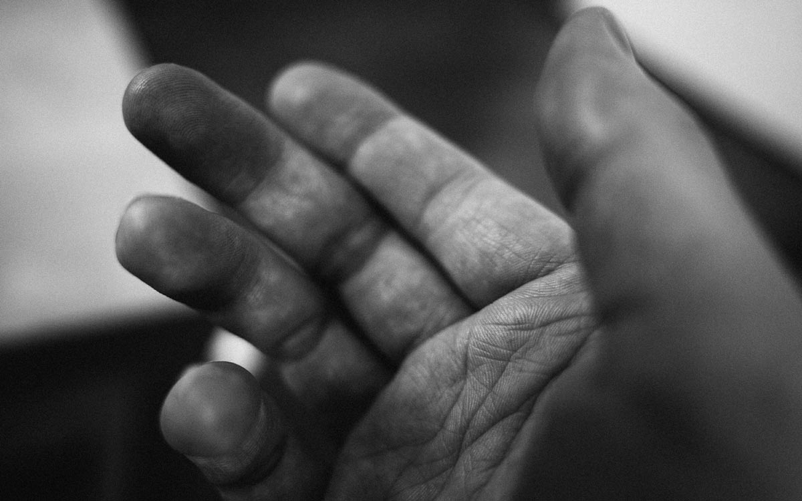

— designer.

Tool for form-givingI came to design through art. Today, I approach it in equal measure through code and research.
My profession has been as a designer for nearly the past 10 years, though I have pursued it as a practice since my early teens. I began my career in branding, printed advertisements and information design; since 2012, I have worked as designer of websites, web-based applications, and digital user interfaces.
I have spent almost all of my time in web design working in code and designing in the browser. My approach to design is one based upon user needs, mobile-first design and development, high-calibre performance and aesthetics, solid front-end architecture, and a desire to make things both work and feel simple.
I have been working as a senior UI designer at TrialReach since 2014. During this time, I have contributed at both high and granular levels to designing new products, and increasing the scalability, usability, and performance of our user interfaces. I have also been chiefly responsible for defining and maintaining the brand’s visual execution.
I am proud to say that my work not only serves to help individuals with chronic and terminal medical conditions, but also my colleagues in their efforts to do the same.
Prior to my current position, I worked at a mobile app agency in London, designing user interfaces primarily for iOS-based applications. Before moving to London, I co-founded a design practice in my hometown of Winnipeg, Manitoba — which today is operated by co-founder Robyn Shesterniak.